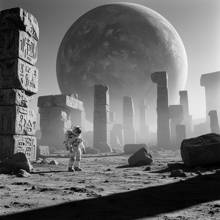

Style — Please generate a documentary black and white photo of a tiny astronau
Please generate a documentary black and white photo of a tiny astronaut standing next to the ancient ruins of a giant planet.

Judge — Direct
- PASSStyle — The image is rendered in black and white. It features sharp focus, high detail, and realistic lighting with defined shadows, particularly on the astronaut's suit, the ground, and the stone ruins. This combination of elements gives the image the quality of a photograph, aligning with the 'documentary black and white photo' style.
- FAILAttribute - Size — The image depicts a very large planet in the sky, which fills a significant portion of the background, fulfilling the 'giant planet' aspect. In the foreground, there is an astronaut standing near ancient ruins. The astronaut appears to be of a normal human scale relative to the stone structures, such as the visible doorways. The astronaut does not appear exceptionally small or 'tiny' in comparison to the immediate surroundings of the ruins.
Judge — Continuum
- PASSStyle — The image is presented in black and white, featuring a range of grey tones. The composition, sharp focus on the subject, and realistic textures on the ground and structures emulate the qualities of a photograph, and the overall aesthetic aligns with a documentary style.
- PASSAttribute - Size — The astronaut is depicted as a small figure in relation to the large, towering stone ruins in the landscape. A massive, cratered planet looms in the sky, dominating the background and emphasizing the small scale of the astronaut and the vastness of the environment.
What the agent did
Thinking
We need generate image per benchmark policy fixed flux2-dev. Need interpret "ancient ruins of a giant planet" maybe ruins on alien giant planet, tiny astronaut next to ancient ruins, documentary black and white photo. Need generate and inspect/edit. Need first call. Could add visual detail: small astronaut dwarfed by colossal ancient planetary ruins perhaps monumental broken arch, cyclopean stone blocks, weathered alien carvings, dust, harsh light, documentary grain. Need likely 1024 square fixed? User doesn't specify size. Generate default. Then inspect perhaps result rendered inline; must use tool and look. Let's call generate.
Step 1 — `generate_image`
{
"prompt": "A documentary black-and-white photograph of a tiny astronaut standing beside the ancient ruins of a colossal giant planet. The astronaut is dwarfed by monumental weathered stone blocks, broken pillars, and cyclopean alien architecture etched with mysterious symbols. Harsh sunlight cuts through drifting dust, casting long stark shadows across the barren terrain. Mid-century expedition documentary realism, natural perspective, deep focus, visible film grain, high contrast, no text, no watermarks.",
"model": "flux2-dev",
"width": 1024,
"height": 1024
}Result img_0

Thinking
We need inspect. Image looks excellent. Does prompt ask "ancient ruins of a giant planet" likely could mean giant planet looming behind ruins. Tiny astronaut next to ruins yes. Need mark best, likely stop. Maybe "ancient ruins of a giant planet" could mean ruins belonging to giant planet? But visual strong. Need maybe no need inspect_region, no text. We can mark best.
Step 2 — `mark_best`
{
"image": "img_0",
"reason": "Strong documentary black-and-white realism with a clearly tiny astronaut dwarfed by monumental ancient ruins and a looming giant planet."
}Thinking
Need final concise.
Model
Generated and marked the final documentary-style black-and-white image.